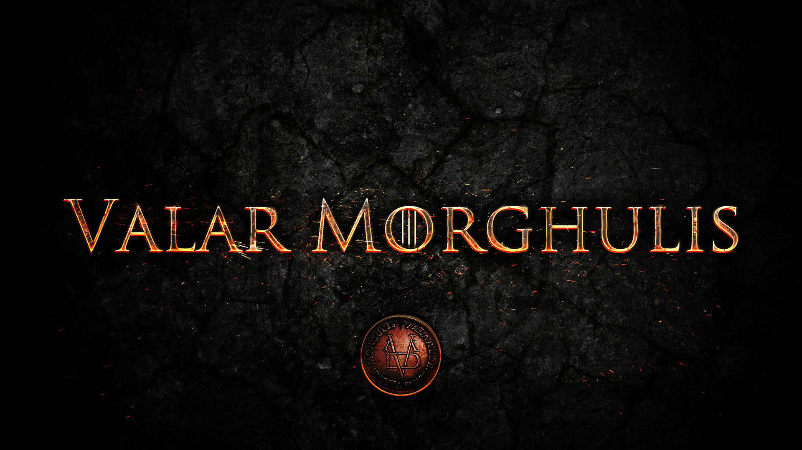

| Season | First aired | Last aired | Novel(s) adapted |
|---|---|---|---|
| Season 1 | April 17, 2011 | June 19, 2011 | A Game of Thrones |
| Season 2 | April 1, 2012 | June 3, 2012 | A Clash of Kings and some early chapters from A Storm of Swords |
| Season 3 | March 31, 2013 | June 9, 2013 | About the first two-thirds of A Storm of Swords |
| Season 4 | April 6, 2014 | June 15, 2014 | The remaining one-third of A Storm of Swords and some elements from A Feast for Crows and A Dance with Dragons |
| Season 5 | April 12, 2015 | June 14, 2015 | A Feast for Crows, A Dance with Dragons and original content, with some late chapters from A Storm of Swords and elements from The Winds of Winter |
| Season 6 | April 24, 2016 | June 26, 2016 | Original content and outlined from The Winds of Winter, with some late elements from A Feast for Crows and A Dance with Dragons |